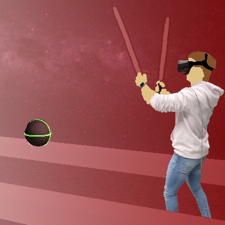
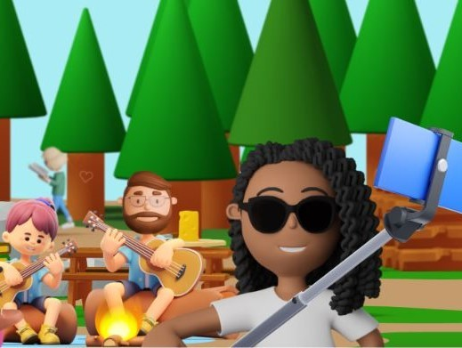

In ACM Conference on Computer-Supported Cooperative Work and Social Computing (CSCW), 2025.
About Me
I am a passionate researcher in Human-Computer Interaction (HCI), specialising in designing technologies for well-being. My focus spans a variety of topics, including but not limited to creating hedonic and eudaimonic experiences, facilitating behaviour change, emotional sensing and prediction (also using AI), and exploring what makes technology creepy. In my research, I combine my interdisciplinary background in media sciences with my interest in the user's psyche to create lasting positive user experiences, especially leveraging virtual reality (VR), augmented reality (AR), wearables, sensors and smartphone applications. Across all fields, I emphasise a human-centered design process, aiming to ensure the user's agency and self-determination when interacting with technology.
My Professional Journey
In October 2025, I became groupleader of the Personal Pervasive Computing (PPC) group in the division society at OFFIS, an institut for informatics. I lead a group of four PhD students here, and together we study how people use everyday digital technologies at home and how these technologies shape daily routines, family/household relationships, and society. The group focuses on enabling understandable and accepted digital interactions, strengthening citizens’ control over their data and digital rights, and addressing social, ethical, and ecological challenges to support healthy and sustainable living.
I began my academic career at the University of Bremen in November 2019, focusing on novel interaction techniques for virtual reality (VR). My research soon narrowed to designing VR solutions aimed at well-being and self-care. I felt honored to be supervised by Johannes Schöning from the HCI Lab in St. Gallen, Switzerland, and by Yvonne Rogers from UCL in London, UK.
I successfully defended my PhD in June 2024, after which I took on the role of postdoctoral researcher at the University of Bremen. In Novemer 2024, I moved to the Max Planck Institute (MPI) in Saarbrücken, Germany, where I continued my postdoctoral research at the Sensorimotor Interaction Group. This role allowed me to broaden my research scope to include haptics, tangibles, and additionally focus on psychological aspects of human-computer interaction (HCI). During the summer of 2025, I was also fortunate to have been a visiting researcher at the Artifical Intelligence and Robotics Lab (AIRLab) at Cornell Tech, New York, led by Angelique Taylor. The AIRLab's research combines AI, Mixed Reality (MR), robotics and healthcare. During this time, I explored thow AI can help young adults in dealing with negative thoughts and promoting positive self-talk, and how AR could facilitate the handover of a patient between Emergency Medical Services (EMS) - the medical first responders at the scene of accident - and the Emergency Department in the hospital.
While my extended academic network span multiple labs from different continents, I have especially strong connections with Jasmin Niess from the University of Oslo, who has been my mentor for many years. Together, we explore technologies for well-being and features that make technology creepy. I also work a lot together with Pawel W. Wozniak from TU Wien, Austria, in the field of personal informatics.
My CV
For a detailed overview of my education and academic career, please find my current CV here. I summarise some aspects of my CV, such as my academic service and awards, in the following.
Academic Service
As an academic researcher, I view participation in academic service as essential. Engaging in committees, reviewing papers, and contributing to conferences reflects my dedication to furthering knowledge and fostering collaboration among researchers and industry professionals. Through academic service, I can positively influence my field, support the academic community, and uphold the high standards of excellence that define my discipline.
Thus, I was part of various organising committees (Paper Chair @Augemnted Humans (AHs) 2026; Proceedings Co-Chair @International Conference on Advanced Visual Interfaces (AVI) 2026; Short Paper Chair @MuC, 2025; Papers Chair @International Conference on Mobile and Ubiquitous Multimedia (MUM) 2025; Posters Chair @International Conference on Mobile and Ubiquitous Multimedia (MUM) 2025; Student Research Competition Chair @Mensch und Computer (MuC) 2023; Local Chair @International Conference on Quality of Multimedia Experience: Towards Technology for Well-Being and Excellence (QoMEX) 2022).
I also served in the role as AC in many program committees, for instance @CHI 2026 and 2025, @MUM 2025 and 2024, and @DIS 2026.
Before my chairing roles, I have been supporting various international conferences as student volunteer, such as IEEE VR and UbiComp/ISWC.
Awards and Recognition
Throughout my academic career, I have been fortunate to receive several awards and honors that recognize my contributions to the field of HCI. In 2024, I was honored with the DIS Honorable Mention Best Paper Award, a prestigious recognition which is awarded to the top 4% of total submissions of the ACM DIS conference.
Additionally, I was awarded with the Best Doctoral Consortium Presentation Award at IEEE VR, 2023. This award was presented to honor the originality and significance of my PhD endeavour about designing VR applications for well-being and self-care, which I won compared to 16 other candidates that year.
Additionally, I have been honored with awards for exceptional peer reviews at several conferences, including CHI and CHI Play. Further, I have secured various grants, such as the MMM Grant for creating feedback loops for using physical and mental health data gathered by smartwatches from the University of Bremen in 2022/2023.
These recognitions underscore my dedication to high-quality research. I am deeply appreciative of the support I have received and remain committed to pursuing excellence in all my academic endeavors.
My Publications
This is a curated list of my publications, organized by full papers first and other publications such as extended abstracts afterwards. You can also check out my Google Scholar Profile for a comprehensive overview of my publications.
Full Papers
2025
2024
* authors contributed equally. In 30th ACM Symposium on Virtual Reality Software and Technology (VRST '24), October 9--11, 2024, Trier, Germany.
DIY Digital Interventions: Behaviour Change with Trigger-Action Programming
In (Journal) Proceedings of the ACM on Human-Computer Interaction
MoodShaper: A Virtual Reality Experience to Support Managing Negative Emotions
In Proceedings of the Conference on Designing Interactive Systems (DIS), 2024. üèÜ
In Proceedings of the Conference on Designing Interactive Systems (DIS), 2024.

Exploring Mobile Devices as Haptic Interfaces for Mixed Reality
In Proceedings of the CHI Conference on Human Factors in Computing Systems (CHI), pages 1--17, 2024.
2023
SelVReflect: A Guided VR Experience Fostering Reflection on Personal Challenges
In Proceedings of the 2023 CHI Conference on Human Factors in Computing Systems (CHI), pages 1--17, 2023.
VeatherReflect: Employing Weather as Qualitative Representation of Stress Data in Virtual Reality
In Proceedings of the 2023 ACM Designing Interactive Systems Conference (DIS), pages 446--458, 2023.
2022
Mood worlds: A virtual environment for autonomous emotional expression
In Proceedings of the 2022 CHI Conference on Human Factors in Computing Systems (CHI), pages 1--16, 2022.

In Proceedings of the 2022 International Conference on Multimodal Interaction (ICMI), pages 558--569, 2022.
2021
In Human-Computer Interaction 2021 (INTERACT), Bari, Italy, August 30--September 3, 2021, Proceedings, Part IV 18, pages 262--283. Springer, 2021.
2020
Investigating effects and user preferences of extra-and intradiegetic virtual reality questionnaires
In Proceedings of the 26th ACM Symposium on Virtual Reality Software and Technology (VRST), pages 1--11, 2020.
Other Publications
2024

In Adjunct Proceedings of the 2024 Nordic Conference on Human-Computer Interaction (NordiCHI Adjunct 2024), October 13--16, 2024, Uppsala, Sweden. Late-Breaking Work (LBW)
Making Space for Self-Care: Designing Virtual Reality Applications to Empower Everyday Well-Being
In Staats- und Universitätsbibliothek Bremen, 2024.PhD Dissertation
2023
[DC] Fostering Well-Being with Virtual Reality Applications
In 2023 IEEE Conference on Virtual Reality and 3D User Interfaces Abstracts and Workshops (VRW), pages 965--966, 2023.Doctoral Consortium

Letting It Go: Four Design Concepts to Support Emotion Regulation in Virtual Reality
In 2023 IEEE Conference on Virtual Reality and 3D User Interfaces Abstracts and Workshops (VRW), pages 763--764, 2023.Extended Abstract

2022
2021
Reflecting on Emotions within VR Mood Worlds
In Adjunct Proceedings of the 2021 ACM International Joint Conference on Pervasive and Ubiquitous Computing and Proceedings of the 2021 ACM International Symposium on Wearable Computers, pages 256--260, 2021.Workshop at CHI 2021
Enhancing VR Experiencces with Smartwatch Data
In Adjunct Proceedings of the 2021 ACM International Conference on Computer-Human Interaction ’21 (CHI), 2021. Workshop at CHI 2021
2020
Mitigating the Negative Impacts when Designing Educational VR Applications for Children
In Adjunct Proceedings of the 2020 ACM International Conference on Computer-Human Interaction ’21 (CHI), 2021. Workshop at CHI 2020

Symmetric Evaluation: An Evaluation Protocol for Social VR Experiences
In Adjunct Proceedings of the 2020 ACM International Conference on Computer-Human Interaction ’21 (CHI), 2021. Workshop at CHI 2020